into the graveyard out of the graveyard down to the playoff path back up to the championship path has been in the graveyard this season
After week 1
32 on the Championship Path, 0 on the Playoff Path, 0 in the Graveyard. Games through Mon, Sep 14.
Championship Path
32 teams no more losses than any eventual champion had at this point 1-0
1-0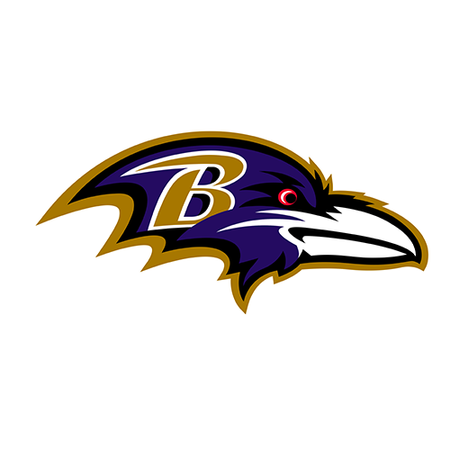
1-0 1-0
1-0 1-0
1-0 1-0
1-0 1-0
1-0 1-0
1-0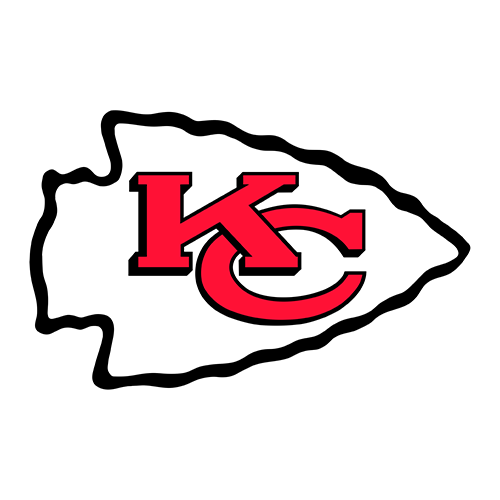
1-0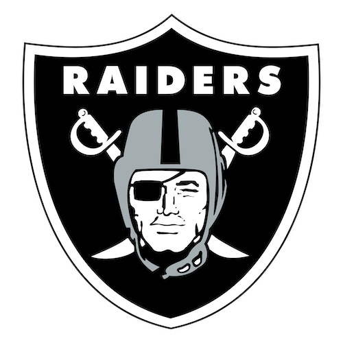
1-0 1-0
1-0 1-0
1-0- 1-0
 1-0
1-0- 1-0
 1-0
1-0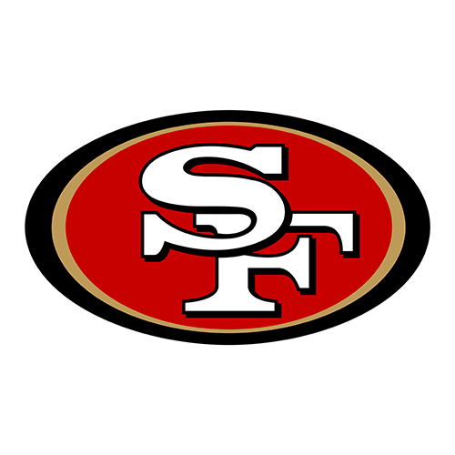
1-0 0-1
0-1 0-1
0-1 0-1
0-1- 0-1
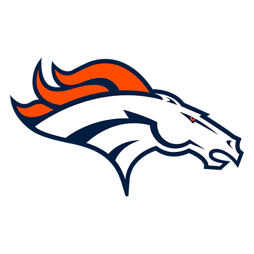
0-1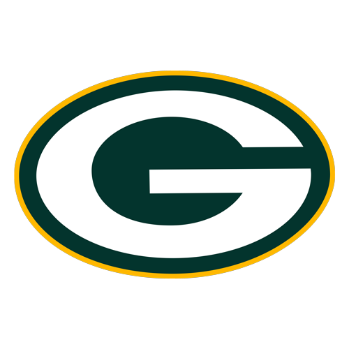
0-1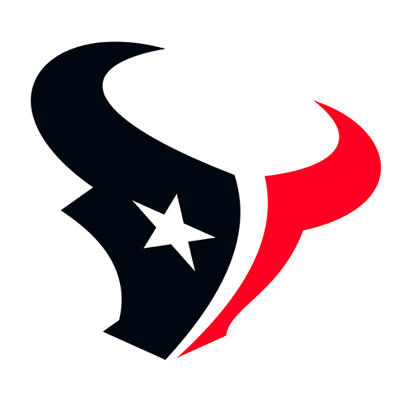
0-1 0-1
0-1 0-1
0-1 0-1
0-1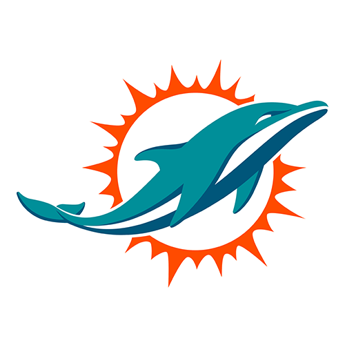
0-1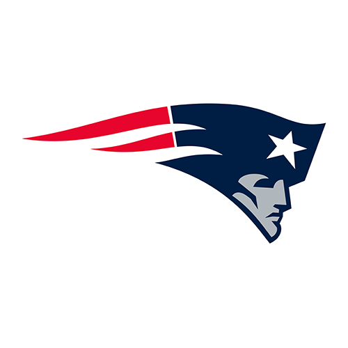
0-1 0-1
0-1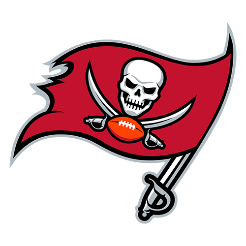
0-1 0-1
0-1 0-1
0-1
Playoff Path
0 teams more than any champion, but no more than some playoff team- Nobody yet
Graveyard
0 teams more losses than any playoff team has ever had at this point- Nobody yet
What moved
- Nobody has moved. All 32 teams are on the Championship Path: eventual champions have lost their opener (1981 SF, 1986 NYG, 1993 DAL, 2001 NE and 8 more).
My take
Everyone’s still alive after one game, but there were some surprises. The biggest story: the Niners smoked the Rams, one of the Super Bowl favorites, 27-7 in Australia. Maybe not a surprise, but the Bears scored 59 points. And are the Giants for real this year?
At stake in week 2
- No tier can change in week 2. Every team is still inside the floors for its next game.
| Record | Teams | Title | Playoffs |
|---|---|---|---|
| 1-0 | Cardinals, Ravens, Bills, Bears, Bengals, Lions, Jaguars, Chiefs, Raiders, Vikings, Giants, Jets, Eagles, Steelers, Seahawks and 49ers | 5% | 52% |
| 0-1 | Falcons, Panthers, Browns, Cowboys, Broncos, Packers, Texans, Colts, Rams, Chargers, Dolphins, Patriots, Saints, Buccaneers, Titans and Commanders | 1% | 22% |
Share of team-seasons 1966-2025 with the same losses after the same number of games that won the Super Bowl or made the playoffs, smoothed so the odds never rise with more losses (ties count as half a loss).
After week 2
32 on the Championship Path, 0 on the Playoff Path, 0 in the Graveyard. Games through Mon, Sep 21.
Championship Path
32 teams no more losses than any eventual champion had at this point- 2-0
- 2-0
- 2-0
- 2-0
- 2-0
- 2-0
- 2-0
- 2-0
- 1-1
- 1-1
- 1-1
- 1-1
- 1-1
- 1-1
- 1-1
- 1-1
- 1-1
- 1-1
- 1-1
- 1-1
- 1-1
- 1-1
- 1-1
- 1-1
- 0-2
- 0-2
- 0-2
- 0-2
- 0-2
- 0-2
- 0-2
- 0-2
Playoff Path
0 teams more than any champion, but no more than some playoff team- Nobody yet
Graveyard
0 teams more losses than any playoff team has ever had at this point- Nobody yet
What moved
- Nobody has moved. All 32 teams are on the Championship Path: eventual champions have lost two of their first two games (1993 DAL, 2001 NE, 2007 NYG).
- On the champion floor: the Falcons, Texans, Colts, Chargers, Dolphins, Buccaneers, Titans and Commanders at 0-2, the worst start any champion has had after two games (1993 DAL, 2001 NE, 2007 NYG). A loss drops them to the Playoff Path.
My take
Everyone’s still alive. Houston is 0-2 already. The Saints beat the Ravens a week after almost beating the Lions, and Las Vegas looks good at 2-0.
At stake in week 3
- Falcons at Packers (Thu, Sep 24): A loss drops the Falcons to the Playoff Path.
- Chargers at Bills (Sun, Sep 27): A loss drops the Chargers to the Playoff Path.
- Texans at Colts (Sun, Sep 27): A loss drops the loser to the Playoff Path.
- Chiefs at Dolphins (Sun, Sep 27): A loss drops the Dolphins to the Playoff Path.
- Titans at Giants (Sun, Sep 27): A loss drops the Titans to the Playoff Path.
- Seahawks at Commanders (Sun, Sep 27): A loss drops the Commanders to the Playoff Path.
- Vikings at Buccaneers (Sun, Sep 27): A loss drops the Buccaneers to the Playoff Path.
| Record | Teams | Title | Playoffs |
|---|---|---|---|
| 2-0 | Bills, Bengals, Chiefs, Raiders, Vikings, Eagles, Seahawks and 49ers | 8% | 63% |
| 1-1 | Cardinals, Ravens, Panthers, Bears, Browns, Cowboys, Broncos, Lions, Packers, Jaguars, Rams, Patriots, Saints, Giants, Jets and Steelers | 2% | 38% |
| 0-2 | Falcons, Texans, Colts, Chargers, Dolphins, Buccaneers, Titans and Commanders | 0.6% | 10% |
Share of team-seasons 1966-2025 with the same losses after the same number of games that won the Super Bowl or made the playoffs, smoothed so the odds never rise with more losses (ties count as half a loss).
After week 3
27 on the Championship Path, 5 on the Playoff Path, 0 in the Graveyard. Games through Mon, Sep 28.
Championship Path
27 teams no more losses than any eventual champion had at this point- 3-0
- 3-0
- 3-0
- 3-0
- 3-0
- 2-1
- 2-1
- 2-1
- 2-1
- 2-1
- 2-1
- 2-1
- 2-1
- 2-1
- 2-1
- 2-1
- 1-2
- 1-2
- 1-2
- 1-2
- 1-2
- 1-2
- 1-2
- 1-2
- 1-2
- 1-2
- 1-2
Playoff Path
5 teams more than any champion, but no more than some playoff team- 0-3
- 0-3
- 0-3
- 0-3
- 0-3
Graveyard
0 teams more losses than any playoff team has ever had at this point- Nobody yet
What moved
- Off the Championship Path: the Texans (0-3), Chargers (0-3), Dolphins (0-3), Buccaneers (0-3) and Titans (0-3). No eventual champion since 1966 had that many losses at the same point.
My take
Our first split. We have five 0-3 teams that are no longer on the Championship Path, because no 0-3 team has ever won the Super Bowl. The surprise 3-0 team is probably the Raiders with Kirk Cousins. And Case Keenum got a big win for the Bears on Monday Night Football.
At stake in week 4
- Titans at Ravens (Sun, Oct 4): A win puts the Titans back on the Championship Path.
- Cowboys at Texans (Sun, Oct 4): A win puts the Texans back on the Championship Path.
- Packers at Buccaneers (Sun, Oct 4): A win puts the Buccaneers back on the Championship Path.
- Dolphins at Vikings (Sun, Oct 4): A win puts the Dolphins back on the Championship Path.
- Chargers at Seahawks (Sun, Oct 4): A win puts the Chargers back on the Championship Path.
| Record | Teams | Title | Playoffs |
|---|---|---|---|
| 3-0 | Bills, Chiefs, Raiders, Vikings and 49ers | 10% | 74% |
| 2-1 | Ravens, Bears, Bengals, Browns, Broncos, Lions, Jaguars, Giants, Eagles, Steelers and Seahawks | 4% | 52% |
| 1-2 | Cardinals, Falcons, Panthers, Cowboys, Packers, Colts, Rams, Patriots, Saints, Jets and Commanders | 0.8% | 22% |
| 0-3 | Texans, Chargers, Dolphins, Buccaneers and Titans | 0% | 3% |
Share of team-seasons 1966-2025 with the same losses after the same number of games that won the Super Bowl or made the playoffs, smoothed so the odds never rise with more losses (ties count as half a loss).
After week 4
27 on the Championship Path, 5 on the Playoff Path, 0 in the Graveyard. Games through Mon, Oct 5.
Championship Path
27 teams no more losses than any eventual champion had at this point- 4-0
- 4-0
- 4-0
- 3-1
- 3-1
- 3-1
- 3-1
- 3-1
- 3-1
- 3-1
- 3-1
- 2-2
- 2-2
- 2-2
- 2-2
- 2-2
- 2-2
- 2-2
- 2-2
- 2-2
- 2-2
- 2-2
- 2-2
- 1-3
- 1-3
- 1-3
- 1-3
Playoff Path
5 teams more than any champion, but no more than some playoff team- 0-4
- 0-4
- 0-4
- 0-4
- 0-4
Graveyard
0 teams more losses than any playoff team has ever had at this point- Nobody yet
What moved
- Nobody moved this week.
- On the champion floor: the Cardinals, Saints, Jets and Commanders at 1-3, the worst start any champion has had after four games (2001 NE). A loss drops them to the Playoff Path.
- On the playoff floor: the Texans, Chargers, Dolphins, Buccaneers and Titans at 0-4, the most losses any playoff team has had after four games (1992 SD). One more loss is the Graveyard.
My take
All five 0-3 teams lost and stayed down. The Texans are 0-4. Wow. Only the 1992 Chargers have made the playoffs after starting 0-4, and they had to win 11 of their last 12 games to do it. Can any of these teams pull that off? We could have our first Graveyard teams next week.
At stake in week 5
- Buccaneers at Cowboys (Thu, Oct 8): A loss puts the Buccaneers in the Graveyard.
- Bengals at Dolphins (Sun, Oct 11): A loss puts the Dolphins in the Graveyard.
- Vikings at Saints (Sun, Oct 11): A loss drops the Saints to the Playoff Path.
- Browns at Jets (Sun, Oct 11): A loss drops the Jets to the Playoff Path.
- Texans at Titans (Sun, Oct 11): A loss puts the loser in the Graveyard.
- Giants at Commanders (Sun, Oct 11): A loss drops the Commanders to the Playoff Path.
- Broncos at Chargers (Sun, Oct 11): A loss puts the Chargers in the Graveyard.
- Lions at Cardinals (Sun, Oct 11): A loss drops the Cardinals to the Playoff Path.
- On a bye: Panthers and Chiefs. A tier can’t change on a bye.
| Record | Teams | Title | Playoffs |
|---|---|---|---|
| 4-0 | Chiefs, Vikings and 49ers | 13% | 83% |
| 3-1 | Ravens, Bills, Bears, Browns, Jaguars, Raiders, Giants and Seahawks | 6% | 61% |
| 2-2 | Falcons, Panthers, Bengals, Cowboys, Broncos, Lions, Packers, Colts, Rams, Patriots, Eagles and Steelers | 2% | 37% |
| 1-3 | Cardinals, Saints, Jets and Commanders | 0.2% | 11% |
| 0-4 | Texans, Chargers, Dolphins, Buccaneers and Titans | 0% | 0.6% |
Share of team-seasons 1966-2025 with the same losses after the same number of games that won the Super Bowl or made the playoffs, smoothed so the odds never rise with more losses (ties count as half a loss).
After week 5
25 on the Championship Path, 4 on the Playoff Path, 3 in the Graveyard. Games through Mon, Oct 12.
Championship Path
25 teams no more losses than any eventual champion had at this point- 5-0
- 5-0
- 4-0
- 4-1
- 4-1
- 4-1
- 3-1-1
- 3-2
- 3-2
- 3-2
- 3-2
- 3-2
- 3-2
- 3-2
- 3-2
- 3-2
- 3-2
- 2-2
- 2-3
- 2-3
- 2-3
- 2-3
- 2-3
- 2-3
- 1-3-1
Playoff Path
4 teams more than any champion, but no more than some playoff team- 1-4
- 1-4
- 1-4
- 1-4
Graveyard
3 teams more losses than any playoff team has ever had at this point- 0-5 (has been in the graveyard this season)
- 0-5 (has been in the graveyard this season)
- 0-5 (has been in the graveyard this season)
What moved
- Into the Graveyard: the Chargers (0-5, after losing to the Broncos), Dolphins (0-5, after losing to the Bengals) and Titans (0-5, after losing to the Texans).
- Off the Championship Path: the Cardinals (1-4) and Saints (1-4). No eventual champion since 1966 had that many losses at the same point.
- The Chargers, 0-5: one loss past the playoff floor of four after five games, week 1 in the Graveyard. 116 teams since 1966 have started 0-5; the best of them finished 8-8 and none made the playoffs.
- The Dolphins, 0-5: one loss past the playoff floor of four after five games, week 1 in the Graveyard. 116 teams since 1966 have started 0-5; the best of them finished 8-8 and none made the playoffs.
- The Titans, 0-5: one loss past the playoff floor of four after five games, week 1 in the Graveyard. 116 teams since 1966 have started 0-5; the best of them finished 8-8 and none made the playoffs.
- On the champion floor: the Commanders at 1-3-1, the worst start any champion has had after five games (1980 OAK, 2001 NE). A loss drops them to the Playoff Path.
- On the champion floor: the Falcons, Cowboys, Colts, Rams, Jets and Eagles at 2-3, the worst start any champion has had after five games (1980 OAK, 2001 NE). A loss drops them to the Playoff Path.
My take
We have our first Graveyard teams. Chargers, Dolphins and Titans: at 0-5 you can kiss your playoff hopes goodbye. According to the historical record, no team has ever made the playoffs after hitting the Graveyard even once during the season. Houston finally got its first win of the season, over Tennessee in a battle of winless teams.
At stake in week 6
- Bears at Falcons (Sun, Oct 18): A loss drops the Falcons to the Playoff Path.
- Titans at Colts (Sun, Oct 18): A win lifts the Titans out of the Graveyard; a loss drops the Colts to the Playoff Path.
- Jets at Patriots (Sun, Oct 18): A loss drops the Jets to the Playoff Path.
- Panthers at Eagles (Sun, Oct 18): A loss drops the Eagles to the Playoff Path.
- Cardinals at Rams (Sun, Oct 18): A loss drops the Rams to the Playoff Path.
- Chargers at Chiefs (Sun, Oct 18): A win lifts the Chargers out of the Graveyard.
- Cowboys at Packers (Sun, Oct 18): A loss drops the Cowboys to the Playoff Path.
- Commanders at 49ers (Mon, Oct 19): A loss drops the Commanders to the Playoff Path.
- On a bye: Bengals, Lions, Dolphins and Vikings. A tier can’t change on a bye.
| Record | Teams | Title | Playoffs |
|---|---|---|---|
| 5-0 | Vikings and 49ers | 14% | 90% |
| 4-0 | Chiefs | 13% | 83% |
| 4-1 | Ravens, Bills and Jaguars | 9% | 74% |
| 3-1-1 | Giants | 9% | 62% |
| 3-2 | Bears, Bengals, Browns, Broncos, Lions, Packers, Raiders, Patriots, Steelers and Seahawks | 3% | 48% |
| 2-2 | Panthers | 2% | 37% |
| 2-3 | Falcons, Cowboys, Colts, Rams, Jets and Eagles | 0.4% | 20% |
| 1-3-1 | Commanders | 0% | 6% |
| 1-4 | Cardinals, Texans, Saints and Buccaneers | 0% | 6% |
| 0-5 | Chargers, Dolphins and Titans | 0% | 0% |
Share of team-seasons 1966-2025 with the same losses after the same number of games that won the Super Bowl or made the playoffs, smoothed so the odds never rise with more losses (ties count as half a loss).
After week 6
18 on the Championship Path, 12 on the Playoff Path, 2 in the Graveyard. Games through Mon, Oct 19.
Championship Path
18 teams no more losses than any eventual champion had at this point- 6-0
- 5-0
- 5-0
- 5-1
- 4-2
- 4-2
- 4-2
- 4-2
- 4-2
- 4-2
- 4-2
- 4-2
- 3-2
- 3-2
- 3-2
- 3-2-1
- 3-3
- 3-3
Playoff Path
12 teams more than any champion, but no more than some playoff team- 2-4
- 2-4
- 2-4
- 2-4
- 2-4
- 2-4
- 2-4
- 2-4
- 2-4
- 1-4-1
- 1-5
- 1-5 (has been in the graveyard this season)
Graveyard
2 teams more losses than any playoff team has ever had at this point- 0-5 (has been in the graveyard this season)
- 0-6 (has been in the graveyard this season)
What moved
- Out of the Graveyard: the Titans at 1-5. The playoff floor steps up to five losses at six games (1970 CIN, 2015 KC, 2018 IND, 2020 WAS all made it from there), so this is a return to the Playoff Path, not a comeback: no team that has entered the Graveyard has ever made the playoffs.
- Off the Championship Path: the Falcons (2-4), Cowboys (2-4), Colts (2-4), Rams (2-4), Jets (2-4), Eagles (2-4) and Commanders (1-4-1). No eventual champion since 1966 had that many losses at the same point.
- The Chargers, 0-6: one loss past the playoff floor of five after six games, week 2 in the Graveyard. 74 teams since 1966 have started 0-6; the best of them finished 8-8 and none made the playoffs.
- The Dolphins, 0-5: one loss past the playoff floor of four after five games, week 2 in the Graveyard. 116 teams since 1966 have started 0-5; the best of them finished 8-8 and none made the playoffs.
My take
Tons of teams moved down from the Championship Path this week: no champion has ever had four losses after six games. The Titans moved back up to the Playoff Path with their win over the Colts. But one more loss puts them at 1-6, and only the 1970 Bengals have ever made the playoffs after losing six of their first seven games. They had to win seven in a row to end the season to do it.
At stake in week 7
- Steelers at Saints (Sun, Oct 25): A win puts the Saints back on the Championship Path.
- 49ers at Falcons (Sun, Oct 25): A win puts the Falcons back on the Championship Path.
- Giants at Texans (Sun, Oct 25): A win puts the Texans back on the Championship Path.
- Colts at Vikings (Sun, Oct 25): A win puts the Colts back on the Championship Path.
- Dolphins at Jets (Sun, Oct 25): A win lifts the Dolphins out of the Graveyard; a win puts the Jets back on the Championship Path.
- Broncos at Cardinals (Sun, Oct 25): A win puts the Cardinals back on the Championship Path.
- Rams at Raiders (Sun, Oct 25): A win puts the Rams back on the Championship Path.
- Cowboys at Eagles (Mon, Oct 26): A win puts the winner back on the Championship Path.
- On a bye: Bills, Jaguars, Chargers and Commanders. A tier can’t change on a bye.
| Record | Teams | Title | Playoffs |
|---|---|---|---|
| 6-0 | 49ers | 21% | 94% |
| 5-0 | Chiefs and Vikings | 14% | 90% |
| 5-1 | Bills | 12% | 81% |
| 4-2 | Ravens, Bears, Browns, Broncos, Packers, Jaguars, Patriots and Steelers | 4% | 61% |
| 3-2 | Panthers, Bengals and Lions | 3% | 48% |
| 3-2-1 | Giants | 0.7% | 39% |
| 3-3 | Raiders and Seahawks | 0.7% | 33% |
| 2-4 | Cardinals, Falcons, Cowboys, Texans, Colts, Rams, Saints, Jets and Eagles | 0% | 10% |
| 1-4-1 | Commanders | 0% | 2% |
| 1-5 | Buccaneers and Titans | 0% | 2% |
| 0-5 | Dolphins | 0% | 0% |
| 0-6 | Chargers | 0% | 0% |
Share of team-seasons 1966-2025 with the same losses after the same number of games that won the Super Bowl or made the playoffs, smoothed so the odds never rise with more losses (ties count as half a loss).
After week 7
21 on the Championship Path, 10 on the Playoff Path, 1 in the Graveyard. Games through Mon, Oct 26.
Championship Path
21 teams no more losses than any eventual champion had at this point- 6-0
- 6-1
- 5-1
- 5-1
- 5-2
- 5-2
- 5-2
- 5-2
- 4-2
- 4-2
- 4-2
- 4-2-1
- 4-3
- 4-3
- 4-3
- 4-3
- 3-3
- 3-4
- 3-4
- 3-4
- 3-4
Playoff Path
10 teams more than any champion, but no more than some playoff team- 1-4-1
- 2-5
- 2-5
- 2-5
- 2-5
- 2-5
- 2-5
- 2-5
- 1-5 (has been in the graveyard this season)
- 1-6 (has been in the graveyard this season)
Graveyard
1 team more losses than any playoff team has ever had at this point- 0-6 (has been in the graveyard this season)
What moved
- Out of the Graveyard: the Dolphins at 1-5. The playoff floor steps up to five losses at six games (1970 CIN, 2015 KC, 2018 IND, 2020 WAS all made it from there), so this is a return to the Playoff Path, not a comeback: no team that has entered the Graveyard has ever made the playoffs.
- Back on the Championship Path: the Falcons at 3-4. The champion floor steps up to four losses at seven games (2001 NE).
- Back on the Championship Path: the Cowboys at 3-4. The champion floor steps up to four losses at seven games (2001 NE).
- Back on the Championship Path: the Rams at 3-4. The champion floor steps up to four losses at seven games (2001 NE).
- The Chargers, 0-6: one loss past the playoff floor of five after six games, week 3 in the Graveyard. 74 teams since 1966 have started 0-6; the best of them finished 8-8 and none made the playoffs.
- On the champion floor: the Falcons, Cowboys, Rams and Raiders at 3-4, the worst start any champion has had after seven games (2001 NE). A loss drops them to the Playoff Path.
- On the playoff floor: the Titans at 1-6, the most losses any playoff team has had after seven games (1970 CIN). One more loss is the Graveyard.
My take
Seattle smoked the Chiefs to hand them their first loss. The Niners lost as well, so Minnesota is the last undefeated team remaining. And the Dolphins won to resurrect themselves out of the Graveyard.
At stake in week 8
- Titans at Bengals (Sun, Nov 1): A loss puts the Titans in the Graveyard.
- Cardinals at Cowboys (Sun, Nov 1): A loss drops the Cowboys to the Playoff Path.
- Raiders at Jets (Sun, Nov 1): A loss drops the Raiders to the Playoff Path.
- Falcons at Buccaneers (Sun, Nov 1): A loss drops the Falcons to the Playoff Path.
- Chargers at Rams (Sun, Nov 1): A win lifts the Chargers out of the Graveyard; a loss drops the Rams to the Playoff Path.
- Eagles at Commanders (Sun, Nov 1): A win puts the Commanders back on the Championship Path.
- On a bye: Texans, Saints, Giants and 49ers. A tier can’t change on a bye.
| Record | Teams | Title | Playoffs |
|---|---|---|---|
| 6-0 | Vikings | 21% | 94% |
| 6-1 | 49ers | 15% | 85% |
| 5-1 | Bills and Chiefs | 12% | 81% |
| 5-2 | Bears, Browns, Broncos and Steelers | 7% | 72% |
| 4-2 | Bengals, Lions and Jaguars | 4% | 61% |
| 4-2-1 | Giants | 0.8% | 46% |
| 4-3 | Ravens, Packers, Patriots and Seahawks | 0.8% | 46% |
| 3-3 | Panthers | 0.7% | 33% |
| 3-4 | Falcons, Cowboys, Rams and Raiders | 0.3% | 18% |
| 2-5 | Cardinals, Texans, Colts, Saints, Jets, Eagles and Buccaneers | 0% | 4% |
| 1-4-1 | Commanders | 0% | 2% |
| 1-5 | Dolphins | 0% | 2% |
| 1-6 | Titans | 0% | 0.6% |
| 0-6 | Chargers | 0% | 0% |
Share of team-seasons 1966-2025 with the same losses after the same number of games that won the Super Bowl or made the playoffs, smoothed so the odds never rise with more losses (ties count as half a loss).
After week 8
20 on the Championship Path, 10 on the Playoff Path, 2 in the Graveyard. Games through Mon, Nov 2.
Championship Path
20 teams no more losses than any eventual champion had at this point- 6-1
- 6-1
- 6-1
- 6-2
- 6-2
- 6-2
- 5-2
- 5-2
- 5-2
- 5-2
- 4-2-1
- 5-3
- 5-3
- 5-3
- 4-4
- 4-4
- 4-4
- 4-4
- 3-4
- 2-4-1
Playoff Path
10 teams more than any champion, but no more than some playoff team- 3-5
- 3-5
- 3-5
- 3-5
- 2-5
- 2-5
- 2-6
- 2-6
- 2-6
- 1-6 (has been in the graveyard this season)
Graveyard
2 teams more losses than any playoff team has ever had at this point- 1-7 (has been in the graveyard this season)
- 0-7 (has been in the graveyard this season)
What moved
- Into the Graveyard: the Titans (1-7, after losing at the Bengals).
- Off the Championship Path: the Falcons (3-5) and Cowboys (3-5). No eventual champion since 1966 had that many losses at the same point.
- Back on the Championship Path: the Commanders at 2-4-1. The champion floor steps up to four losses at seven games (2001 NE).
- The Chargers, 0-7: one loss past the playoff floor of six after seven games, week 4 in the Graveyard. 59 teams since 1966 have started 0-7; the best of them finished 6-10 and none made the playoffs.
- The Titans, 1-7: one loss past the playoff floor of six after eight games, week 1 in the Graveyard. 110 teams since 1966 have started 1-7; the best of them finished 9-8 and none made the playoffs.
- On the champion floor: the Commanders at 2-4-1, the worst start any champion has had after seven games (2001 NE). A loss drops them to the Playoff Path.
- On the champion floor: the Panthers at 3-4, the worst start any champion has had after seven games (2001 NE). A loss drops them to the Playoff Path.
- On the champion floor: the Ravens, Rams, Raiders and Seahawks at 4-4, the worst start any champion has had after eight games (2001 NE). A loss drops them to the Playoff Path.
- On the playoff floor: the Dolphins at 1-6, the most losses any playoff team has had after seven games (1970 CIN). One more loss is the Graveyard.
My take
The Titans are back down in the Graveyard after a hard overtime loss. Indianapolis looks to be closing in on it too after a fourth straight loss.
At stake in week 9
- Jaguars at Ravens (Thu, Nov 5): A loss drops the Ravens to the Playoff Path.
- Broncos at Panthers (Sun, Nov 8): A loss drops the Panthers to the Playoff Path.
- Lions at Dolphins (Sun, Nov 8): A loss puts the Dolphins in the Graveyard.
- Rams at Commanders (Sun, Nov 8): A loss drops the loser to the Playoff Path.
- Texans at Chargers (Sun, Nov 8): Nothing can get the Chargers out this week (the earliest exit is game 9, and only by winning every game until then).
- Cardinals at Seahawks (Sun, Nov 8): A loss drops the Seahawks to the Playoff Path.
- Raiders at 49ers (Sun, Nov 8): A loss drops the Raiders to the Playoff Path.
- On a bye: Steelers and Titans. A tier can’t change on a bye.
| Record | Teams | Title | Playoffs |
|---|---|---|---|
| 6-1 | Bills, Vikings and 49ers | 15% | 85% |
| 6-2 | Bears, Broncos and Steelers | 10% | 79% |
| 5-2 | Bengals, Lions, Jaguars and Chiefs | 7% | 72% |
| 5-3 | Browns, Packers and Patriots | 2% | 61% |
| 4-2-1 | Giants | 0.8% | 46% |
| 4-4 | Ravens, Rams, Raiders and Seahawks | 0.3% | 29% |
| 3-4 | Panthers | 0.3% | 18% |
| 3-5 | Cardinals, Falcons, Cowboys and Buccaneers | 0% | 9% |
| 2-4-1 | Commanders | 0% | 4% |
| 2-5 | Texans and Saints | 0% | 4% |
| 2-6 | Colts, Jets and Eagles | 0% | 1% |
| 1-6 | Dolphins | 0% | 0.6% |
| 0-7 | Chargers | 0% | 0% |
| 1-7 | Titans | 0% | 0% |
Share of team-seasons 1966-2025 with the same losses after the same number of games that won the Super Bowl or made the playoffs, smoothed so the odds never rise with more losses (ties count as half a loss).
After week 9
16 on the Championship Path, 13 on the Playoff Path, 3 in the Graveyard. Games through Mon, Nov 9.
Championship Path
16 teams no more losses than any eventual champion had at this point- 7-1
- 7-1
- 7-2
- 7-2
- 6-2
- 6-2
- 6-2
- 6-2
- 6-2
- 6-2
- 5-2-1
- 6-3
- 5-4
- 5-4
- 5-4
- 5-4
Playoff Path
13 teams more than any champion, but no more than some playoff team- 4-5
- 4-5
- 4-5
- 3-5
- 3-5
- 3-5
- 2-5-1
- 3-6
- 3-6
- 3-6
- 2-7
- 2-7
- 2-7
Graveyard
3 teams more losses than any playoff team has ever had at this point- 1-7 (has been in the graveyard this season)
- 1-7 (has been in the graveyard this season)
- 0-8 (has been in the graveyard this season)
What moved
- Into the Graveyard: the Dolphins (1-7, after losing to the Lions).
- Off the Championship Path: the Ravens (4-5), Panthers (3-5), Raiders (4-5) and Commanders (2-5-1). No eventual champion since 1966 had that many losses at the same point.
- The Chargers, 0-8: two losses past the playoff floor of six after eight games, week 5 in the Graveyard. 43 teams since 1966 have started 0-8; the best of them finished 6-10 and none made the playoffs.
- The Dolphins, 1-7: one loss past the playoff floor of six after eight games, week 1 in the Graveyard. 110 teams since 1966 have started 1-7; the best of them finished 9-8 and none made the playoffs.
- The Titans, 1-7: one loss past the playoff floor of six after eight games, week 2 in the Graveyard. 110 teams since 1966 have started 1-7; the best of them finished 9-8 and none made the playoffs.
- On the playoff floor: the Colts, Jets and Eagles at 2-7, the most losses any playoff team has had after nine games (2020 WAS). One more loss is the Graveyard.
My take
We’re at the halfway point of the season. We started with three teams in the Graveyard in week 5, and those same three teams are either still in it or back in it after week 9. The Championship Path has been cut in half since the start of the season, down to 16 teams, and the Rams, Patriots, Seahawks and Browns are right on the edge of it at 5-4.
At stake in week 10
- Dolphins at Colts (Sun, Nov 15): A win lifts the Dolphins out of the Graveyard; a loss puts the Colts in the Graveyard.
- Bills at Jets (Sun, Nov 15): A loss puts the Jets in the Graveyard.
- Jaguars at Titans (Sun, Nov 15): A win lifts the Titans out of the Graveyard.
- Seahawks at Raiders (Sun, Nov 15): A win puts the Raiders back on the Championship Path.
- 49ers at Cowboys (Sun, Nov 15): A win puts the Cowboys back on the Championship Path.
- Chargers at Ravens (Mon, Nov 16): A win puts the Ravens back on the Championship Path; nothing can get the Chargers out this week (the earliest exit is game 12, and only by winning every game until then).
- On a bye: Bears, Broncos, Eagles and Buccaneers. A tier can’t change on a bye.
| Record | Teams | Title | Playoffs |
|---|---|---|---|
| 7-1 | Bills and 49ers | 18% | 93% |
| 7-2 | Bears and Broncos | 13% | 87% |
| 6-2 | Bengals, Lions, Jaguars, Chiefs, Vikings and Steelers | 10% | 79% |
| 5-2-1 | Giants | 6% | 61% |
| 6-3 | Packers | 4% | 71% |
| 5-4 | Browns, Rams, Patriots and Seahawks | 0.6% | 43% |
| 4-5 | Ravens, Cowboys and Raiders | 0% | 15% |
| 3-5 | Panthers, Texans and Saints | 0% | 9% |
| 3-6 | Cardinals, Falcons and Buccaneers | 0% | 4% |
| 2-5-1 | Commanders | 0% | 1% |
| 2-7 | Colts, Jets and Eagles | 0% | 0.5% |
| 1-7 | Dolphins and Titans | 0% | 0% |
| 0-8 | Chargers | 0% | 0% |
Share of team-seasons 1966-2025 with the same losses after the same number of games that won the Super Bowl or made the playoffs, smoothed so the odds never rise with more losses (ties count as half a loss).
Every week of the NFL season there’s a conversation about who’s going to win it all. This is the other conversation: who’s already out?
Not “mathematically eliminated,” which doesn’t happen until December. I mean something earlier and stranger: the point where a team has more losses than any team that went on to make the playoffs has ever had at the same stage. Not more than most of them. More than every single one, going back to the first Super Bowl season in 1966. I call that the Graveyard.
What is the Graveyard?
This started with a simple question: what’s the simplest stat you could use to pick a Super Bowl champion, or at least cross some teams off the list? You hear that 60% of Super Bowl winners started 2-0, so I started there. After week 2, take the records: how much does 2-0 actually help, historically, compared with 1-1 or 0-2?
It helps (36 of the 60 champions started 2-0), but it doesn’t eliminate anybody. Three teams have started 0-2 and won the Super Bowl, so after two weeks everyone’s still eligible. So I kept going, week by week, looking for the point where a record has never produced a champion.
I didn’t want to stop at champions, though. Teams make the playoffs with quite a few losses, whether it’s a weak division or a conference that isn’t very strong that year. Super Bowl winners are different: they’re not always dominant, but they’re usually in the top third of the league all year. So I wanted those two bars kept separate, and that’s where the three tiers come from.
The whole thing runs on two numbers for each point in the season, and both come straight from history.
The first is the champion floor: the most losses any eventual Super Bowl champion had after that many games. After eight games it’s four, because the 2001 Patriots were 4-4 on their way to a title and nobody has won from worse. The second is the playoff floor: the most losses any eventual playoff team had after that many games. After eight games it’s six, set by the 1970 Bengals, the 2020 Washington Football Team and the 2022 Jaguars, who were all 2-6 and all played in January.
Those two lines split every team into three tiers:
- Championship Path. No more losses than the worst start by a champion. A team here has a start that has produced a Super Bowl winner.
- Playoff Path. More losses than any champion had, but no more than some playoff team had. Nobody has won a title from here, but teams have made the playoffs.
- Graveyard. More losses than any playoff team has ever had at this point. Making the playoffs from here would be a first.

A few things about those lines that matter for everything else:
- They’re records, not odds. One team sets each boundary. The 1992 Chargers started 0-4 and finished 11-5 as division champions, so 0-4 is not the Graveyard. They are the only one of 170 teams to start 0-4 and make the playoffs. One team, one boundary.
- They’re frozen. The floors come from the 60 completed seasons, 1966 through 2025. Nothing a 2026 team does can move them until the season is over.
- They never go down. The playoff floor is 8 losses after 14 games and 9 after 15, because a team with games left has room to recover. Where the raw history dips (the champion floor at game 17, which only five seasons have reached), the line is carried forward so a team can’t fall a tier by winning.
- Only losses count. A tie is not a loss. The Giants and Commanders tied in week 5 and it changed nobody’s tier.
Most of the champion floor through game 11 is one team: the 2001 Patriots, who were 1-3, 3-4 and 5-5 and still won the Super Bowl. That’s the team where Drew Bledsoe got hurt in week 2 and a little quarterback named Tom Brady came in and went 11-3 the rest of the way.
The other name all over that line is the Giants, twice. The 2007 team started 0-2, got in as a wild card and beat the 18-0 Patriots in the Super Bowl, the first NFC wild card team to win one. The 2011 team beat the Patriots in the Super Bowl too, after losing seven games in a 16-game regular season. They’re the only champion with seven losses, and they set the champion floor from game 12 on.
The first nine weeks
The tracker tab is the live version. The figures in this section are a snapshot after week 9, when three teams were in the Graveyard and the strangest paths of the season so far had already been walked.
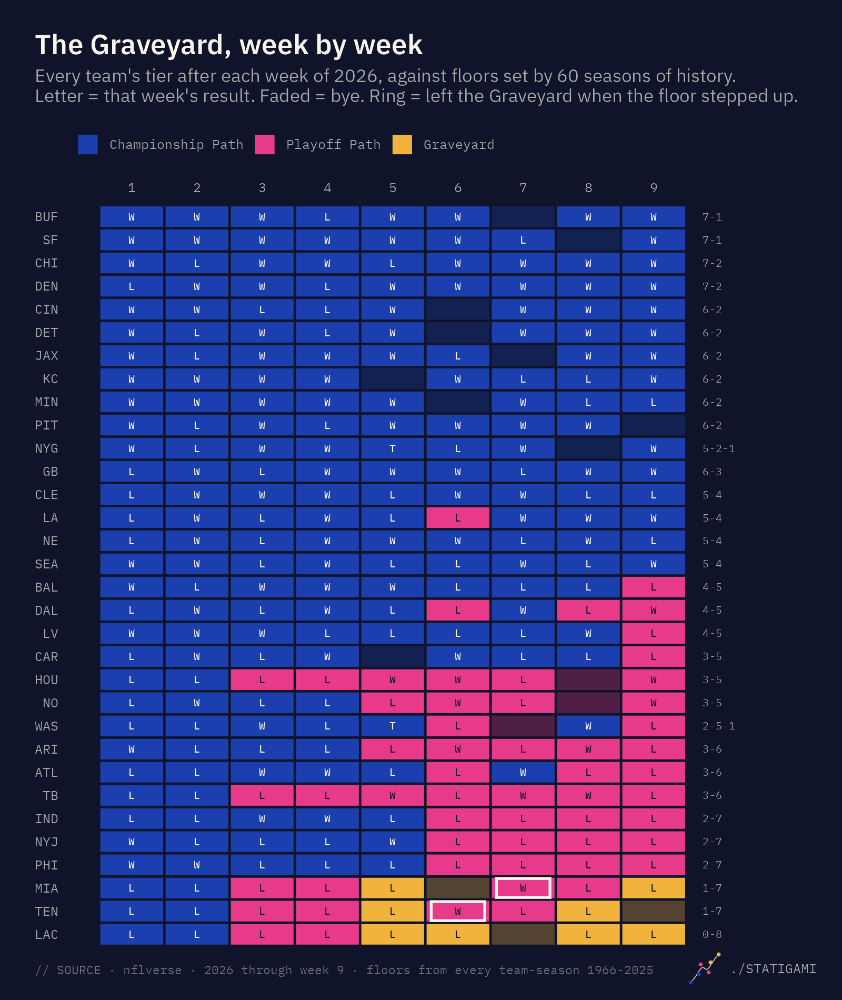
The first two weeks don’t separate anyone. Three champions started 0-2 (the 1993 Cowboys, the 2001 Patriots and the 2007 Giants), so after two games all 32 teams are on the Championship Path by definition. The first split comes in week 3, when five 0-3 teams (Houston, Tampa Bay, the Chargers, Miami and Tennessee) dropped to the Playoff Path. Houston and Tampa Bay won their next game and stayed on it.
The other three kept losing. At 0-5 in week 5, the Chargers, Dolphins and Titans all entered the Graveyard on the same day: 116 teams since 1966 have started 0-5, and the best any of them finished was 8-8.
Then it got strange.

The playoff floor isn’t a smooth line. It’s a staircase, and it steps up at games 6, 7, 9, 12 and 15. So a team in the Graveyard that wins into one of those steps comes back out without having done anything special. The team didn’t climb; the ground rose.
That’s what happened to Tennessee in week 6 and Miami in week 7. Each won its sixth game to reach 1-5, and at six games the playoff floor is five losses (the 1970 Bengals, 2015 Chiefs, 2018 Colts and 2020 Washington were all 1-5 and made it). Back to the Playoff Path. Then each lost its next two, reached 1-7, and re-entered: Tennessee in week 8, Miami in week 9.
I want to be careful about what leaving the Graveyard means, because it looks like a comeback and it isn’t one. Of the 611 team-seasons that have entered the Graveyard, 186 left it at least once, for 226 exits in all. Twenty-seven teams went in three separate times. None of the 611 made the playoffs. Not the ones that stayed in, and not the ones that got out.
The best anyone has done from 1-7 is the 2021 Dolphins: seven straight losses, then seven straight wins, 9-8, and a seat on the couch in January. They climbed out of the Graveyard in week 9, spent most of the rest of the year on the Playoff Path, and it still ended the way all 110 seasons that started 1-7 have ended. From 0-8, where the Chargers were after week 9, the best finish among 43 teams is 6-10.
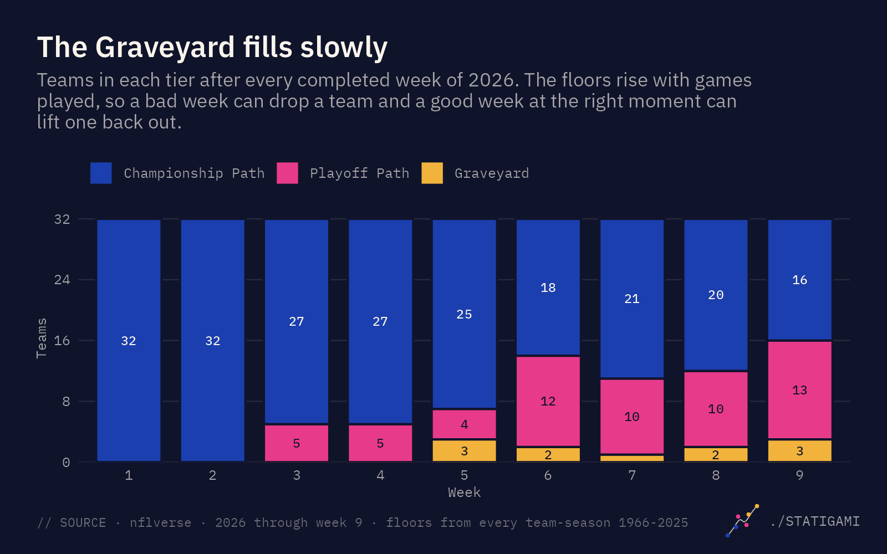
Three teams in the Graveyard after nine weeks sounds like not much, and it is: the count bounced between 1 and 3 from week 5 on, partly because the floor steps let teams out as fast as losses put them in. That’s normal. Across the 60 seasons, about 9% of teams are in the Graveyard after eight games. By game 14 it’s 31%. In a typical recent season 11 to 13 of the 32 teams end up in it at some point.
A tier is a floor, not a forecast. 132 teams since 1966 stayed on the Championship Path all season and still missed the playoffs, and 93 playoff teams spent at least a week on the Playoff Path. The tiers only say what has and hasn’t happened before, which is exactly what they’re for.
As for the three teams in it: Miami and Tennessee are reasonable. But the Chargers, with Jim Harbaugh and Mike McDaniel? Who is the problem there? 0-8 is crazy.
Does the baseline matter?
Everything here uses all 60 seasons of the Super Bowl era. I also ran it on the modern era alone, 1999 on, because the league has changed: 14-game seasons, four-team divisions, a quarter of the league making the playoffs instead of 44%. If the old seasons were distorting the floors, that’s where it would show.
They mostly aren’t. The champion floor is identical in both eras at every game count. The playoff floor differs in exactly two places, each because of one old team:
- After 4 games: the 1992 Chargers at 0-4. Since 1999 no 0-4 team has made the playoffs, so on the modern floor 0-4 is the Graveyard. That’s why Houston, Tampa Bay, the Chargers, Miami and Tennessee were all briefly in it in week 4 on the modern baseline and not on the full one.
- After 7 games: the 1970 Bengals at 1-6. Modern floor says Graveyard; full floor says Playoff Path. Tennessee in week 7 and Miami in week 8 landed there.
That’s 7 of 288 team-weeks through week 9 where the two disagree, and from game 8 on the floors are the same in both eras, so there will be no more disagreements the rest of the way. The two modern-only cases are also the closest anyone has come to a Graveyard playoff team: the 2004 Bills and 2017 Chargers both started 0-4, both finished 9-7, and both missed the playoffs by one game. On the modern floor they were Graveyard teams. On the full floor they never were, because of a Chargers team from 1992. I went with the full baseline because a thing that has happened once is still a thing that has happened.
The more data the better, too. This whole project is based on historical data, so I’d rather use all 60 seasons of it.
Data and methods
Data. Game results for 1999 on come from the nflverse games file, used under CC BY 4.0. Results for 1966–1998 come from FiveThirtyEight’s NFL Elo game file (MIT license), reshaped to match. The two files agree on every one of the 5,852 games they share (1999–2020), and the older seasons were checked against a second independent source. Regular season only, 1966–2025: 60 seasons, 1,770 team-seasons, 659 playoff teams, 60 champions. The 2026 tiers use the current nflverse file, re-downloaded every week. Team logos are from nflverse.
Floors. For each number of games played (1 to 17), the champion floor is the most regular-season losses any eventual Super Bowl champion had at that point, and the playoff floor is the most any team that played a playoff game had. Both are carried forward so they never decrease with games played (this changes only the champion floor at game 17, where the 2011 Giants, 7-7 after 14, never played a 17th game). Ties are not losses. Both floors are frozen at the end of the 2025 season.
Tiers. A team is on the Championship Path if its losses are at or below the champion floor for its games played, on the Playoff Path if they are above that but at or below the playoff floor, and in the Graveyard if they are above the playoff floor. Tiers are indexed by games played, so a team on a bye keeps its tier. A team leaves the Graveyard only when the playoff floor steps up at its next game (games 6, 7, 9, 12 and 15); it can’t be lifted out by anything a rival does.
Two baselines. Every tier is computed on the full Super Bowl era (1966 on, the primary) and on the modern era (1999 on). They differ only at games 4 and 7.
Odds. The title and playoff odds in each week’s table are the share of team-seasons since 1966 with the same number of losses after the same number of games (ties count as half a loss) that won the Super Bowl or made the playoffs, smoothed with isotonic regression so the odds never rise as losses rise. With 60 champions spread over hundreds of records, the raw rates are noisy.
What a playoff team is. Any team that played a playoff game, including all 16 in the 1982 strike-season tournament and the 1968 Chiefs, who lost a division tiebreaker. Strike seasons (1982, 9 games; 1987, 15 games) are kept as played. The 1966–69 AFL is included because both leagues sent a champion to the Super Bowl.
Limitations. The floors are set by single teams, so they are records, not probabilities: a tier says whether something has happened before, not how likely it is. Older seasons were shorter and sent a smaller share of teams to the playoffs, which makes their boundaries rarer rather than wrong. Seventeen-game seasons have only been played five times, so the game-17 floors rest on 158 team-seasons.
Code and data: nfl-graveyard on GitHub, including the weekly update script that rebuilds the tiers, these figures and the tracker.